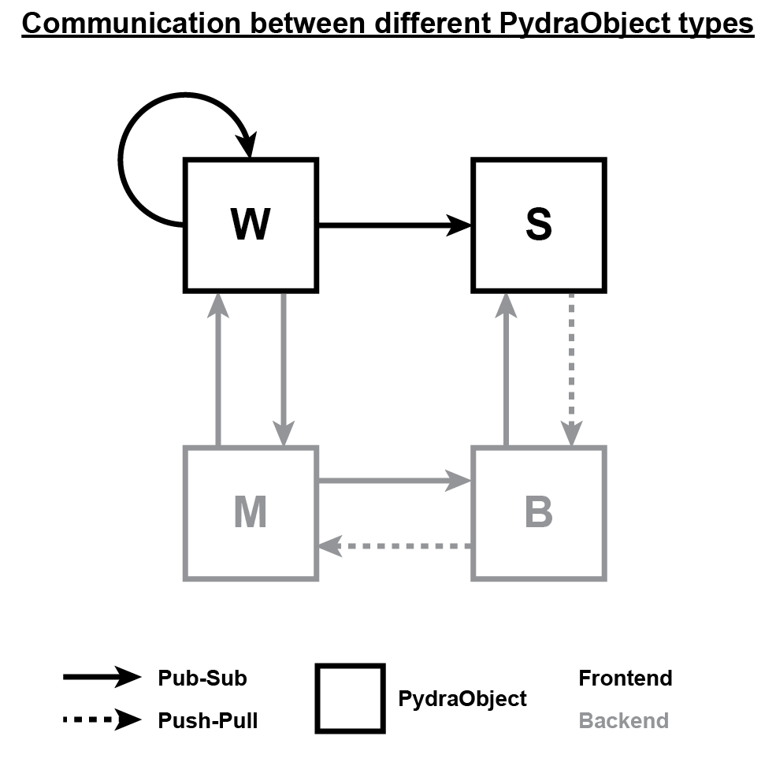

Overview of Pydra¶
At its core, Pydra is a framework for creating a network of worker objects that send and receive message to and from each other. As such, there are two base classes that users should be aware of:
The
PydraObjectclassThe
PydraMessageclass
PydraObject¶
Various subclasses of PydraObject provide extended functionality to send and receive PydraMessages using ZeroMQ. There are four types of PydraObject users should be aware of:
PydraMainPydraBackendWorkerSaver
All PydraObject classes must be singletons (i.e. only a single instance of each PydraObject class can exist in the code). Worker and Saver are the frontend user classes, and may be subclassed as often as required to create the desired network architecture (provided each worker and saver is only instantiated once within the network). PydraMain and PydraBackend are backend classes that most users will not need to worry about, but people wanting to gain a deeper understanding of how pydra works may wish to acquaint themselves with these also.
PydraMessage¶
Pydra objects communicate with each other via Pydra messages. Pydra messages provide a means to send various data types
over ZeroMQ sockets. First and foremost, the PydraMessage class provides a means to
generate decorators that alter the behavior of Pydra object methods - allowing them to publish their outputs to their
respective ZeroMQ sockets. Moreover, Pydra messages have encode() and
decode() methods that allow specific data types to be serialized and
deserialized. Finally, Pydra messages prepend various tags to data sent over sockets, providing target objects with all
the necessary information needed to decode and handle messages at the other end.
Each type of PydraMessage has a unique flag associated with it. This flag allows
receiving objects to pass the message to the correct handler. Each message type also encodes / decodes specific
combinations of data types that serve specific functions within the Pydra network.
Frontend message types that users can include in their networks are:
Flag |
Data types |
Usage |
|---|---|---|
EVENT |
str, dict |
Call methods of other Pydra objects |
DATA |
{float, int, dict, array} |
Pass data between Pydra objects (see below) |
STRING |
str |
Pass strings between Pydra objects |
TRIGGER |
None |
Sends a simple trigger between Pydra objects |
Pydra objects pass data to each other via DATA messages. There are three data formats that Pydra can handle. These are:
Name |
Flags |
Signature |
Description |
|---|---|---|---|
FRAME |
DATA, f |
(float, int, array) |
A timestamped, indexed numpy array (e.g. video frame) |
INDEXED |
DATA, i |
(float, int, dict) |
Timestamped, indexed data (e.g. tracking coordinate data) |
TIMESTAMPED |
DATA, t |
(float, dict) |
Timestamped data not associated with any particular index |
While the above message types provide extensive functionality and flexibility, users may also define their own message types, provided they do not conflict with backend messages.
Other messages types that exist within pydra for backend functionality are: EXIT, CONNECTION, ERROR, REQUEST, and backchannel messages signified with an underscore (_CONNECTION, _DATA, _ERROR).
A note on ZeroMQ¶
The Pydra network and messaging functionality is provided through the ZeroMQ library. ZeroMQ is a very general library that allows messages to be passed over network ports (typically TCP). A comprehensive guide can be found here.
ZeroMQ provides two major advantages:
Since it is network-based, it can send messages between computers.
It is available in multiple programming languages (including Java - which, by extension, means it can be used with MATLAB).
Nodes in a ZeroMQ network are connected via pairs of “sockets” that bind to ports. ZeroMQ provides numerous patterns by which messages can be sent between sockets. Pydra uses two of these patterns:
PUB-SUB: this is a one-to-many pattern, allowing one node to send messages to many others.
PUSH-PULL: this is a one-to-one unidirectional pattern, allowing one node to push messages to another.
While Pydra handles all ZeroMQ messaging under-the-hood (including serialization and deserialization of messages), a basic understanding of the library is helpful when it comes to understanding the guts of Pydra - especially if you want to create custom message types and/or use Pydra to communicate with other programming languages.
In addition, it is helpful to understand that objects in Pydra communicate over network ports (rather than pipes or queues). The downside is that ports must be properly configured - which can be a little finicky. For simple networks running on a single computer, Pydra can configure everything automatically. However, for more complex network architectures involving multiple computers or triggers, manual configuration of the ZeroMQ network is necessary.
Communication between PydraObjects¶
Each of the four PydraObject types has a unique way of communicating with other types in the network. This is summarized here:
Where W is the Worker type, S is the Saver type, M is the PydraMain type and B is the PydraBackend type.
To create a network in pydra, users only need to create their own workers and savers. Communication with workers is achieved via the PydraMain instance, and communication with savers is achieved via the PydraBackend instance. Messages are back-channeled from savers to main via the backend.